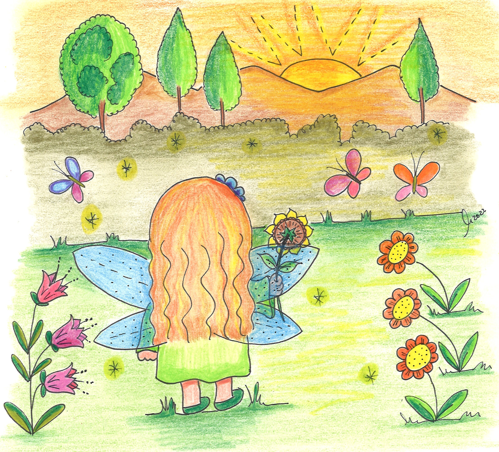
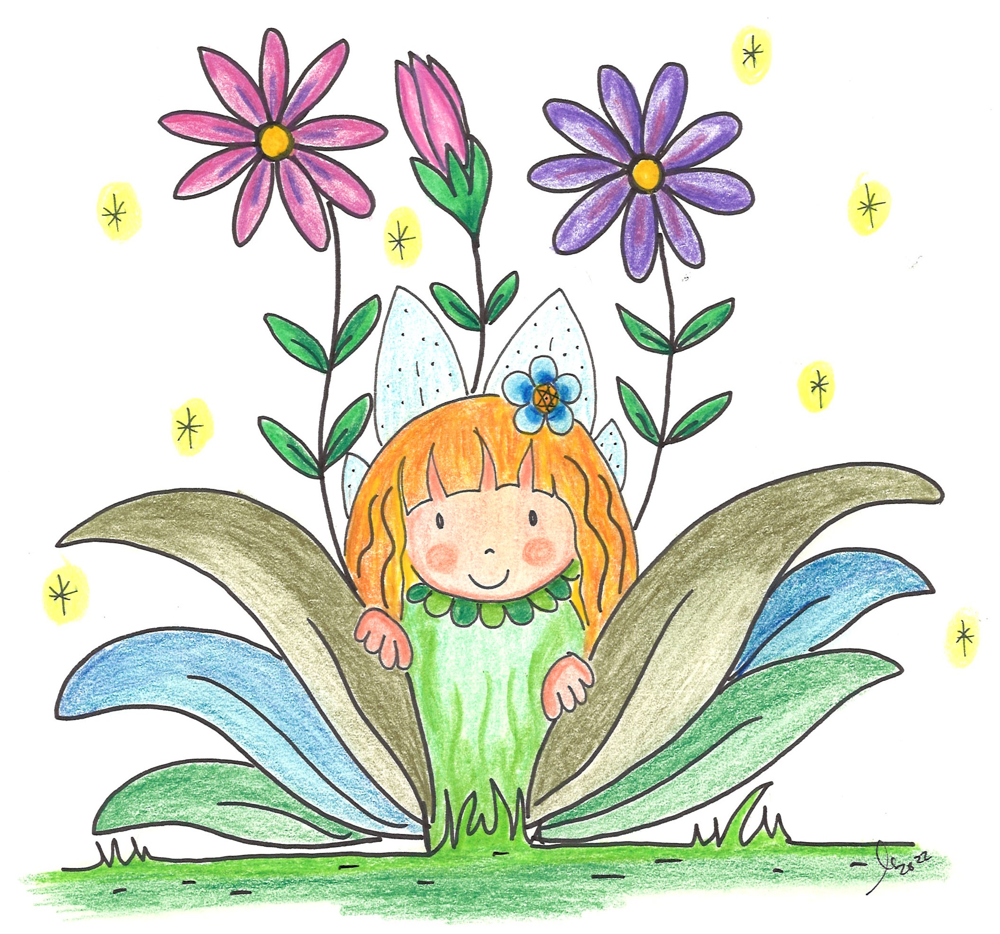
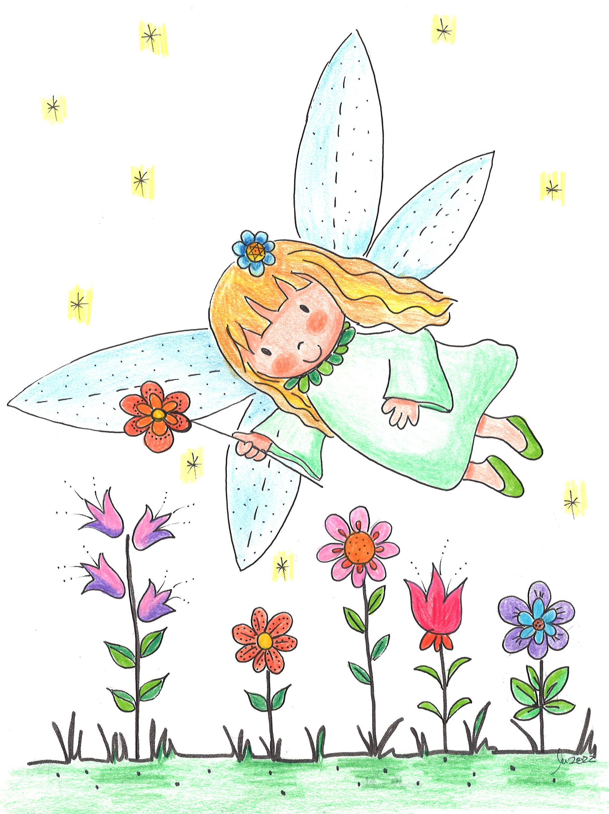
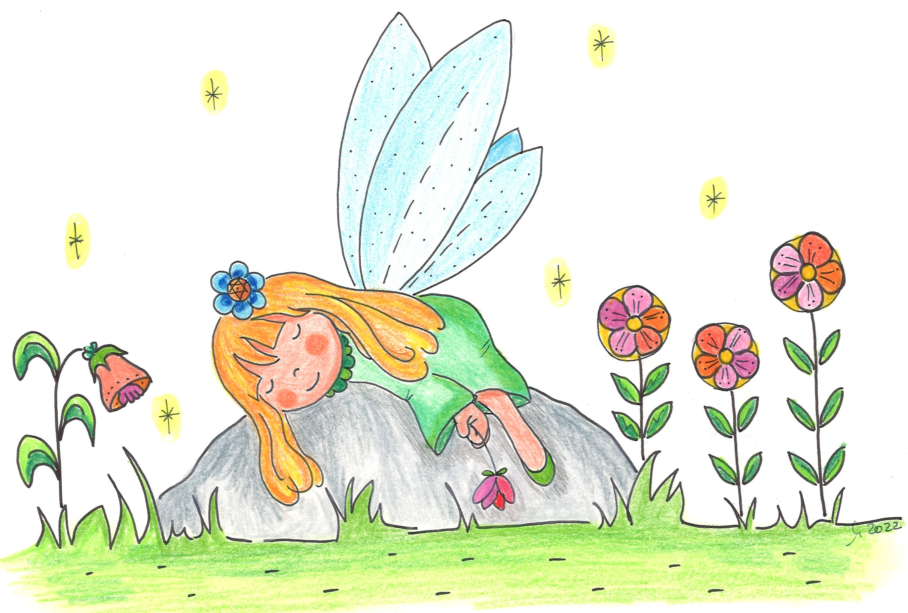
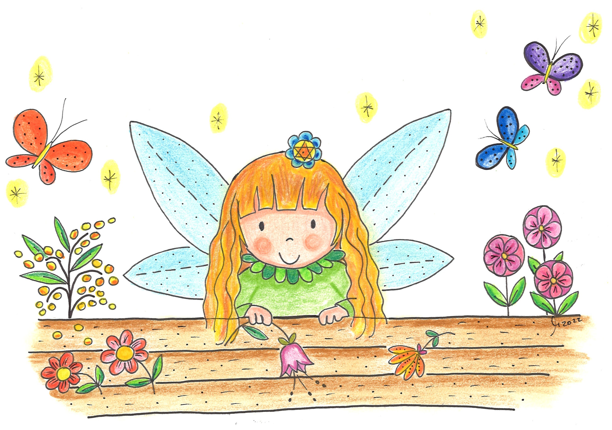
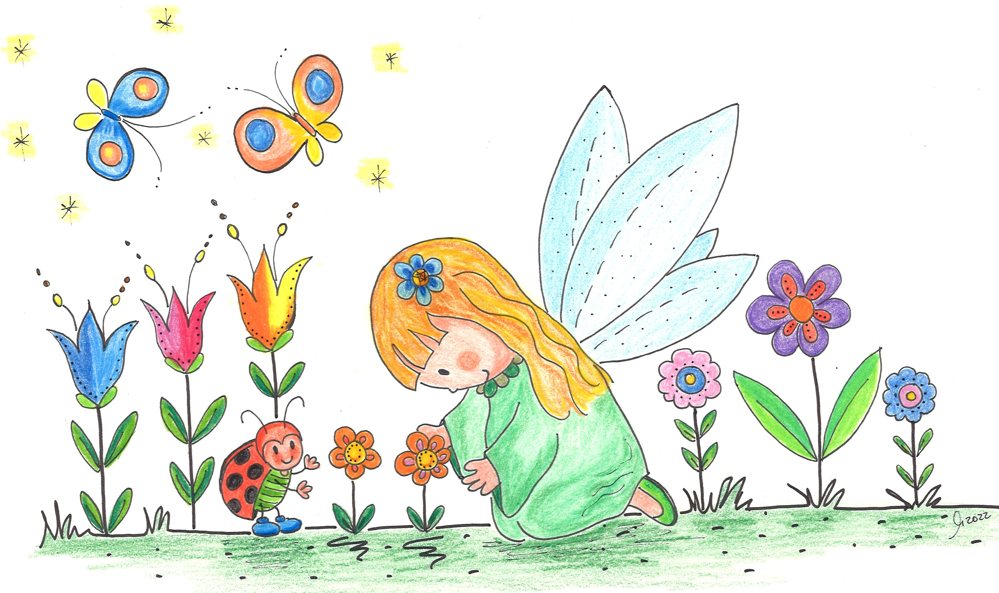
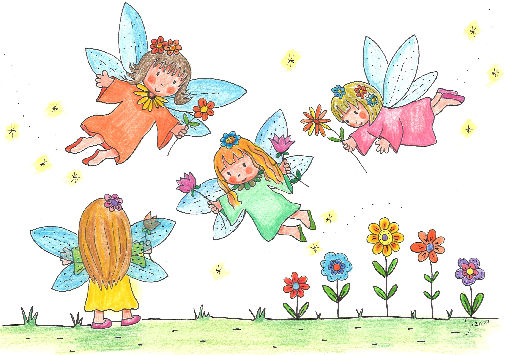
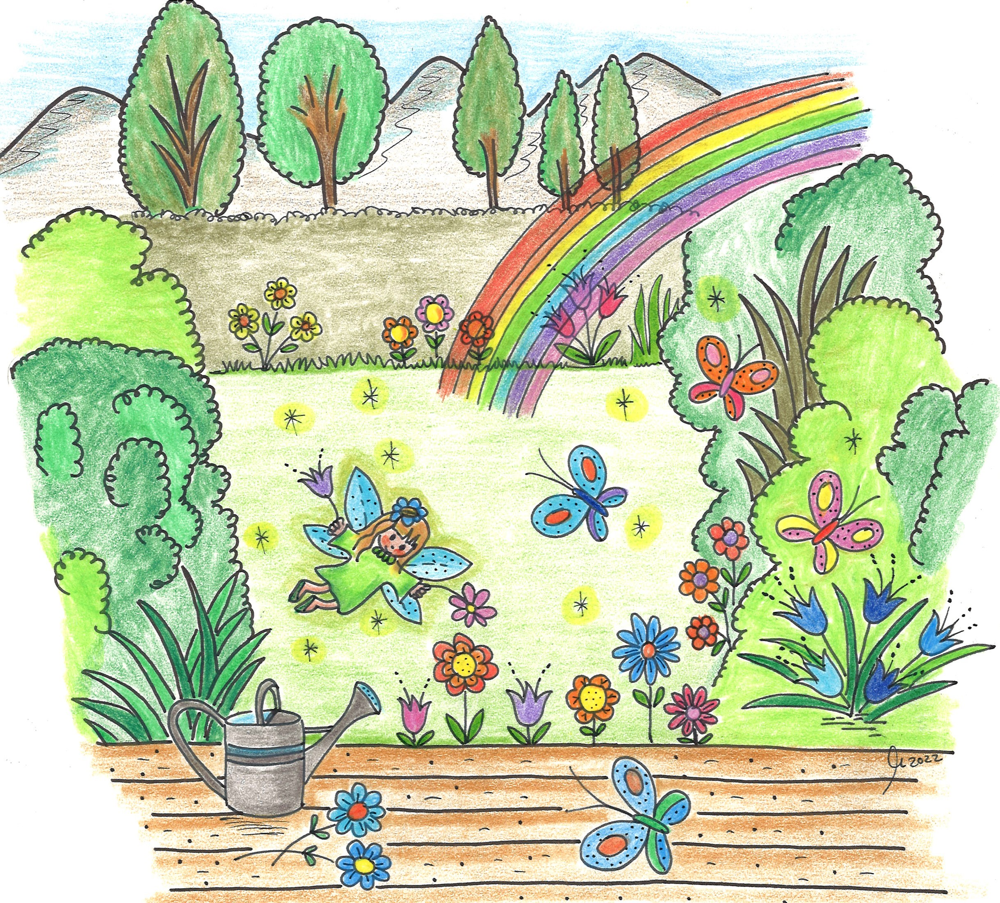

A pequena Fada das Flores
Existe uma lenda muito antiga, passada de boca em boca, que fala sobre pequeninos seres, parecidos com borboletas e que andam por todos os jardins a cuidar das suas flores. São as Fadas das Flores.
E os jardins agradecem às Fadas com as suas diferentes flores emanando aromas inebriantes. As Fadas são criaturas destemidas, sem medo de nada, mas que não se aproximam dos humanos. Isto, porque veem frequentemente o que eles fazem aos minúsculos insetos e inofensivos animais que apenas nascem, crescem e brincam continuamente nos jardins.
Também para sua segurança, aparecem apenas quando o Sol acorda e quando o Sol vai dormir. Nestes dois momentos, os tons do céu são alaranjados e muito magnetizantes. Por isso é sempre tão mágico o nascer e o pôr do Sol.

Numa terra longínqua e onde faz muito frio, existe um jardim especial que durante todo o inverno está coberto de neve. Em certas noites sem nuvens, o céu incendeia-se de luzes esverdeadas, reluzentes, fascinantes e todo o manto branco se ilumina.
Com o passar de muitos dias, o tempo vai aquecendo anunciando que uma nova estação está a chegar. Então a neve derrete e dá lugar a um refúgio que tem um tapete generoso de relva muito fresca e despenteada, rodeado de arbustos desalinhados. Nesse jardim existe uma moradia aconchegante.
Os dois namorados que se mudaram para esta moradia, pintaram as paredes e os tetos, trocaram a madeira do chão e abrilhantaram o espaço, transformando-o num verdadeiro lar para nele habitarem. E neste jardim também vive escondida uma Fada das Flores.
Ela adora espreitar os namorados a trabalhar dentro e fora da casa.

Como todas as Fadas das Flores, ela é um ser encantado, mágico, diáfano, tornando-se invisível sempre que precisa. É muito inteligente e bonita.
As Fadas vivem sempre em jardins, florestas, bosques, quintais ou hortas e em todo o sítio onde existe o Reino vegetal.
A sua atividade principal é transferir luz e boa energia para as plantas, harmonizando o lugar onde estão.
E também se interessam bastante por animais e pessoas.
Em relação às pessoas, se estas forem boas, gentis e merecedoras, as fadas tornam-se protetoras e guias do seu destino, doando essa proteção sem que ninguém se aperceba.
A Fada das Flores que vive neste jardim, é do tamanho de um beija-flor, tem cabelos ondulados, aloirados e os seus olhos são de um azul celestial que se confunde com o que está a observar.
Consegue esvoaçar por onde quer, com as asas transparentes e a sua roupinha flutuante e reluzente. Para ela, tudo o que vê ao seu redor é muito belo e sublime, porque o seu coração é puro.
Quando levanta voo e se atreve a ir dentro da casa, é como se o vento também a acompanhasse e apenas um zunido muito suave pode ser escutado se se estiver com muita atenção.

O trabalho da Fada das Flores é manter o seu jardim em ordem.
No inverno há sempre menos que fazer, devido ao tal manto de neve fofa que brilha continuamente, seja com os raios de sol, seja com o luar.
Mas, nas estações em que não há neve, a Fada das Flores não sossega um minuto. Tem de organizar, metodicamente, todos os pormenores do jardim. Começando por aprimorar as sementes que um dia vão brotar, crescer e florescer, embelezando o jardim. Capinando a relva para esta não ficar demasiado comprida. Podando os arbustos que abraçam o jardim e, claro, protegendo os pequenos seres que também vivem nesses arbustos. Porque será que esta Fada das Flores escolheu este jardim?... A Fada das Flores sempre teve um sonho guardado no seu coração.

A pequena Fada das Flores gostava de saber como é viver e ser amada como humana.
Gostava de também poder morar na moradia do jardim que cuida com tanto amor há tanto, mas tanto tempo.
E gostava de um dia poder preparar o jardim para acolher outras Fadas das Flores. E depois celebrar com uma grande festa a Vida, onde cada pormenor conta e é importante. Então, num dia em que os namorados estavam a namorar, decidiu tornar-se numa sementinha e esgueirou-se para a barriga daquela que ia ser sua mãe.
Nasceu como uma menina e cresceu na tal casa aconchegante com o jardim maravilhoso, e com os pais que sempre a cuidaram com doçura e carinho.

Cresceu a sentir como é bom ser humano quando se é amado, esquecendo-se assim que era a Fada das Flores daquele jardim, e por alguns anos viveu apenas sendo uma menina. Mas num dia de primavera, enquanto brincava no jardim, sentiu uma melodia de vento fresco e perfumado que a fez recordar quem era: Uma Fada.
Nesse mesmo instante apareceram muitas outras Fadas pequeninas, que apenas ela via.
E a partir dessa tarde, a menina, a Fada das Flores em forma de menina, corria continuamente para o jardim e, junto com as outras Fadas, brincavam e alindavam os cantos daquele lugar.
E também tinham longas conversas, em silêncio, por telepatia, acerca do mundo das fadas e do mundo dos humanos. Em poucos dias o jardim tornou-se o mais bonito da sua rua.
A vizinhança passava, observava e proferia elogios que se espalhavam no ar.
E as fadas sentiam os elogios como música perfumada. Os pais contemplavam e sentiam-se abençoados por terem o privilégio de fazer crescer e poder cuidar daquela menina. O legado mais importante que eles lhe queriam deixar era o Amor. O mesmo Amor que permitia que a sua vida fluísse pacificamente e imbuída de leveza. Os pais da menina também gostavam de estar no jardim. Brincavam com ela e, sem saberem, com todas as fadas invisíveis que também por lá voavam.
Sentiam a magia do jardim, sem a conseguir explicar. Mas tinham uma certeza. A causa dessa magia era a sua menina.
A menina contava-lhes histórias das Fadas do Jardim, sem revelar que também era uma Fada.
Os pais escutavam-na embevecidos, e nunca questionavam o que não conseguiam ver e entender. E ficavam pensativos.
E assim, ela ensinou-lhes muitos segredos do jardim, sem lhes contar o seu segredo: que era uma Fada das Flores.

E todos os dias, sagradamente, dedicavam um tempo para com ela aparar a relva verde, retirar as ervas daninhas e apreenderam da sua menina, que todos os pequenos seres têm direito a conviver no jardim.
E nunca mais usaram inseticidas. Para fertilizar a terra do jardim, aprenderam a fazer compostagem com as sobras dos alimentos orgânicos que diariamente eles utilizavam para confecionar pratos deliciosos.
A Natureza é o ventre donde surge toda a existência.
É a Mãe que tudo nos doa envolvido em amor.
E, igualmente, acolhe no seu regaço, absorve e recicla os desperdícios da humanidade.
Os humanos devem colaborar.
A Mãe Natureza é sábia e perfeita.
É urgente saber parar, pensar, observar e atuar, respeitando a Natureza.
Os dias foram correndo, os anos foram passando e a magia do jardim nunca parou de acontecer. A menina tinha agora sete anos.
E o dia da grande festa chegou. Era um fim de tarde ensolarado pelo verão. O céu estava cor de laranja. Flores multicores e alinhadas decoravam cada canteiro. Borboletas com asas de seda, serpenteavam e coloriam o ar. Ouvia-se uma sinfonia cantada por pássaros chegados há pouco tempo ao jardim, atraídos pela sua magia. E havia também muitas Fadas, trajadas com pequeninos vestidos de tule, coloridos e volitantes, que bailavam ao sabor do vento.

A menina, a Fada das Flores em forma de menina, deliciava-se neste ambiente de festa e ia contando aos pais o que via.
E os pais não viam, mas sorriam encantados com o que ouviam.
O encantamento foi tão grande que a menina revelou–lhes que era uma Fada das Flores: então um raio de sol fez explodir uma bolha invisível no meio do jardim e, nesse instante, todas as Fadas presentes tornaram-se visíveis para os dois namorados, pais da menina.
E eles ficaram imóveis, boquiabertos e mudos, tal era o seu espanto. Conseguiam ver todo o seu jardim cintilante como a menina o descrevia, com pequenas Fadas matizadas que voavam de um lado para o outro, a bailar em alegria e sem descanso.
Conseguiam ver o que antes era invisível e compreender as histórias misteriosas que a menina lhes contava.
Então, a menina falou-lhes do Mundo Mágico donde provinha, explicou que era uma Fada das Flores que sempre viveu no jardim e que durante muito tempo observou os namorados e o poder do seu Amor. E, que também por Amor e apenas por Amor, quis nascer como sua filha. E agora que o seu segredo já não era mais segredo, teria de partir. Os pais sem qualquer hesitação, abraçaram-na e decidiram ir com ela para o seu Mundo Mágico. A casa ficou novamente vazia. O jardim ficou em harmonia e silêncio. E todo aquele universo invisível, o Mundo das Fadas das Flores onde só existe Amor, continuou como uma lenda muito antiga, passada de boca em boca e que fala sobre pequeninos seres, parecidos com borboletas, que andam por todos os jardins a cuidar das suas flores.

Fim da história cheia de magia.
Dedicada à minha Sara, que para mim é e sempre será, uma Fadinha das Flores